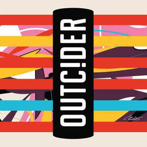

Trade Mark Journal No.2026/003 16 January 2026
UK00004308434 10 December 2025 (6,16,18,19,20,21,25,32,33)

- Class 6
- Metal barrels; taps of metal for cider kegs; taps of metal for casks; signs, and information and advertising displays, of metal; displays, stands and signage (metallic); metal barriers; door knockers; parts and fittings for all the aforesaid goods.
- Class 16
- Printed entry tickets; souvenir event programs; printed event programs; postcards; greeting cards; Christmas cards; books; book markers; stickers; car bumper stickers; comics and comic books; coasters of paper or cardboard; table mats of paper or cardboard; mats for glasses; beer mats of paper; printed cider guides; activity books; recipe books; prints; printed artwork; posters; stationery; pens; calendars; diaries; note books; address books; artists’ materials; stencils; pencil cases; advertising posters; drawings; paintings; lithographic works of art; printed art reproductions; photographs; photographic albums; ornaments made of paper or cardboard; paperweights; works of art and figurines of paper and cardboard, and architects’ models; gift vouchers; gift cards; paper badges; cardboard badges; gift bags; wrapping paper; wrapping material; packaging materials; paper table cloths; disposable napkins; boxes made of paper or cardboard; passport holders; chalk boards; maps; flags; paper bunting; tissues formed of paper; personal organisers; temporary tattoos; party invitations; printed matter; periodical publications; magazines; educational materials; folders; document holders; printed certificates; artwork authenticated by non-fungible tokens [NFTS].
- Class 18
- Umbrellas and parasols; bags and holdalls; tote bags; souvenir bags; luggage; handbags; rucksacks; carrying bags; toiletry bags; wallets; purses; card cases; document cases; baggage tags; clothing for animals; leads for animals; collars for animals; bags for carrying animals; walking sticks; boot bags; bags authenticated by non-fungible tokens [NFTS]; parts and fittings for all the aforesaid goods.
- Class 19
- Non-metallic signs, and information and advertising displays.
- Class 20
- Sales gondolas; point of sale displays; displays, stands and signage (non metallic); wall plaques; non-metallic barrels and casks; non-metallic valves for controlling the flow of liquid into barrels; furniture; garden furniture; mirrors; picture frames; beds for pets; figurines of wood, wax or plastic.
- Class 21
- Drinking glasses; drinking vessels; cups of precious metal; barware; glassware; pint glasses; cider mugs; cider jugs; cider pitchers; flasks; hip flasks; tankards; mugs; travel mugs; cups and mugs; coasters; drip mats for glasses; drip trays; beer mats not of paper or textile; insulating sleeve holders for beverage cans; heat and thermally insulated containers for food and drinks; bottles, sold empty; bottle cradles; water bottles; sports bottles (empty); bottle openers; corkscrews; stoppers for bottles; cocktail shakers; beverage stirrers; cool bags; portable cold boxes; bottle coolers; bottle buckets; bottle stands; ice buckets; buckets; tableware; cookware; bakeware; kitchen utensils; household utensils; crockery; trays; oven gloves; ironing board covers; storage tins; piggy banks; glass ornaments; cookie jars; household containers; food storage containers; porcelainware; earthenware; quaiches; glassware and barware authenticated by non-fungible tokens [NFTS].
- Class 25
- Clothing; headgear; footwear; T shirts; polo shirts; football shirts; rugby shirts; shirts; sweatshirts; hoodies; jumpers; jackets; replica kit; replica shirts; replica socks; sports clothing; dresses; trousers; shorts; gloves; scarves; socks; belts; ties; bow ties; braces; wristbands; shoes; sandals; slippers; trainers; boots; football boots; rugby boots; underwear; waterproof clothing; outerwear; caps; hats; bandanas; nightwear; dressing gowns; kimonos; swimwear; beachwear; fancy dress costumes; aprons; clothing and headgear authenticated by non-fungible tokens [NFTs].
- Class 32
- Non-alcoholic beverages; non-alcoholic cider; non-alcoholic perry; mineral and aerated waters; seltzer water; fruit juices and fruit drinks; beers; ales; stout; lagers; non-alcoholic beers; low alcohol beers; aged beers; cask finished beers; sports drinks; non-alcoholic cocktail mixes; syrups and other non-alcoholic preparations for making beverages; non-alcoholic beverages authenticated by non-fungible tokens [NFTS].
- Class 33
- Alcoholic beverages, except beers; cider; low-alcohol cider; perry; low-alcohol perry; spirits; whisky; wines; fruit wines; alcoholic seltzer drinks; low alcoholic drinks; pre-mixed alcoholic beverages; cocktails; alcoholic preparations for making beverages; alcoholic beverages authenticated by non-fungible tokens [NFTS].
Bulmers Limited
Representative: HGF Limited